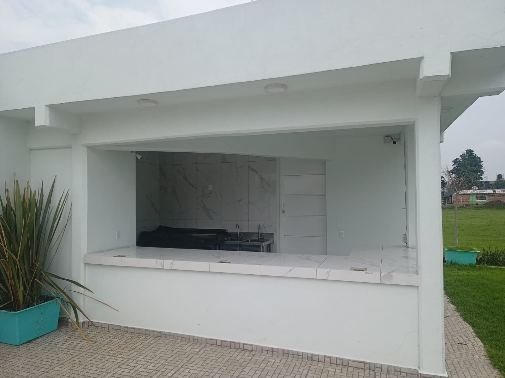

Bienvenido a la secci�n de Cafeter�a del Plantel Teoloyucan. Aqu� puedes explorar m�s �reas del plantel utilizando los botones superiores.

1 / 1
Bienvenido a la secci�n de Cafeter�a del Plantel Teoloyucan. Aqu� puedes explorar m�s �reas del plantel utilizando los botones superiores.
